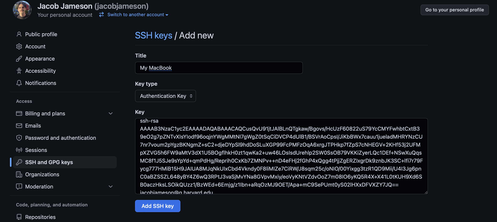

Part 1: Git Installation and SSH Instructions
Part I: Installing Git
Mac OS
Install homebrew following the instructions at https://brew.sh/.
Open Terminal and check if git is already installed.
git --versionIf not, install
gitusingbrew install git. Then verify, its installed by runninggit --version.
Windows
- Go to gitforwindows.org. Make sure you include Git Bash in your installation!
Part II: Creating a GitHub Account
- Go to GitHub.
- Click the “Sign Up” button.
- Follow the on-screen instructions to create your account.
Part III: Git Setup
Configure
gitwith your name and email address. Be sure to use the same email associated with your Github account.git config --global user.name "YOUR NAME" git config --global user.email "YOUR EMAIL ADDRESS"
Part IV: SSH
In order to write code locally on our computer and be able to push to GitHub (or pull from GitHub) daily without constantly having to enter a username and password each time, we’re going to set up SSH keys.
SSH keys come in pairs, a public key that gets shared with services like GitHub, and a private key that is stored only on your computer. If the keys match, you’re granted access.
The cryptography behind SSH keys ensures that no one can reverse engineer your private key from the public one.
source: https://jdblischak.github.io/2014-09-18-chicago/novice/git/05-sshkeys.html
The following steps are a simplification of the steps found in GitHub’s documentation. If you prefer, feel free to follow the steps at that link. Otherwise, for a simplified experience continue on below!
Simplified Setup Steps
Step 1: Check to see if you already have keys.
Run the following command.
ls -al ~/.ssh/If you see any output, that probably means you already have a public and private SSH key. If you have keys, you will most likely you will have two files, one named
id_rsa(that contains your private key) andid_rsa.pub(that contains your public key).sidenote: Those files may also be named something like:
id_ecdsa.puborid_ed25519.pub. That just means you’re using a different encryption algorithm to generate your keys. You can learn more about that here if you chose to. Or, don’t worry about it and power on!If you already have keys, continue to step 3. Otherwise, read on!
Step 2: Create new SSH keys.
Run the following comamnd, but makes sure to replace
your_email@example.comwith your own email address. Use the same email address you used to sign up to GitHub with.ssh-keygen -t rsa -b 4096 -C "your_email@example.com"You may then see a prompt like the one below. Just hit enter to save the key in the default location.
Enter file in which to save the key (/Users/jacob/.ssh/id_rsa):After that, the system will prompt you to enter a passphrase. We’re not going to use a passphrase here, so just go ahead and leave that blank and hit enter twice.
Enter passphrase (empty for no passphrase): Enter same passphrase again:Finally you should see some randomart that looks like this
Your identification has been saved in /Users/jacob/.ssh/id_rsa. Your public key has been saved in /Users/jacob/.ssh/id_rsa.pub. The key fingerprint is: SHA256:2AazdvCBP8d1li9tF8cszM2KbtjPe7iwfCK8gUgzIGY your_email@example.com The key's randomart image is: +---[RSA 4096]----+ | | | . o * | | E . = . . B.*| | o . . X o . + =o| | B S o . o =| | o * + + o.| | . ..o = . | | o+.=o .| | .ooo=+ | +----[SHA256]-----+Step 3: Add your key to GitHub
Run the following command to view your public key
cat ~/.ssh/id_rsa.pubNavigate to https://github.com/settings/keys and hit “New SSH key”. Paste the SSH key from the last command into the text box as shown below and then hit “Add SSH key”. Make sure you copy paste exactly. The key will likely start with ssh_rsa and end with your email address. You can give the key a title like “My Macbook Pro” so you know which computer this key comes from.

Step 4: Verify that it worked!
Run the following command to test your computer’s SSH connection to GitHub
ssh -T git@github.comIf the connection is successful, you will see a message like this
> Hi username! You've successfully authenticated, but GitHub does not > provide shell access.
Recap: What did we just do?
We just created a public/private SSH Key pair. There is now a folder on your computer called .ssh (it is a hidden folder, hidden folders have names that start with .). You can run this command to see the files in that folder.
ls -al ~/.ssh/id_rsa.pub contains your public key, you can see what that looks like by running:
cat ~/.ssh/id_rsa.pubid_rsa contains your private key, you can see what that looks like by running:
cat ~/.ssh/id_rsaThis public and private key pair are mathematically linked. As the name suggests, you can share your public key far and wide, but must keep your private key safe and secure. Since you have shared your public key with GitHub, your computer can encrypt files with your private key and send them to GitHub. Since GitHub has your public key, it can match that file and verify that it is coming from you. Your computer can now securely communicate with GitHub without needing a username and password every time.
To get started with Git, you need to install it on your computer. You can download the installer from the Git website. Once you have Git installed, you can use the git command in your terminal to interact with Git.